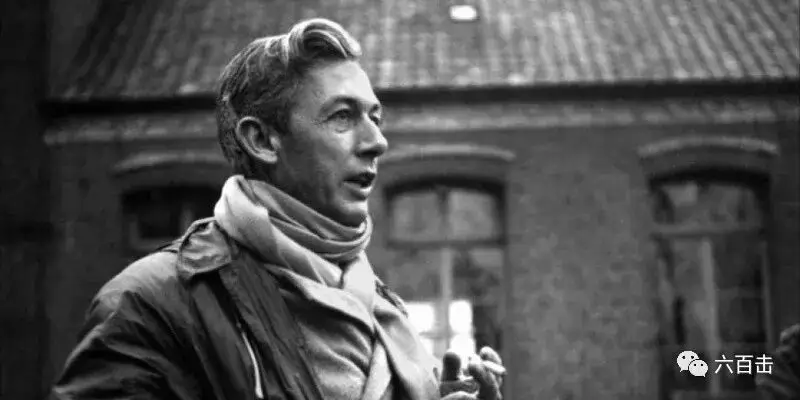
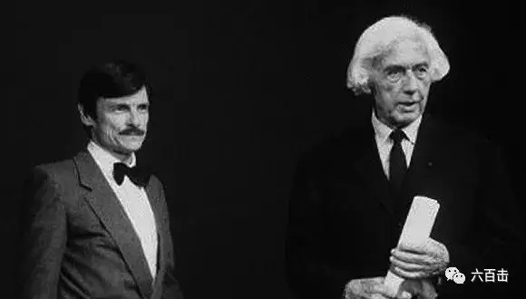
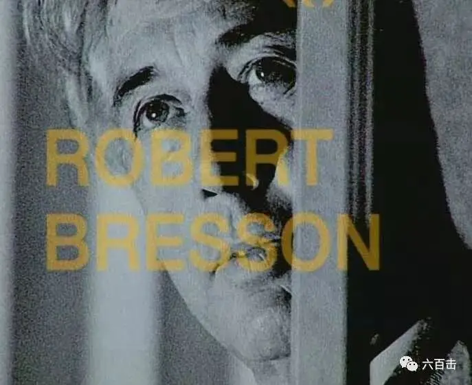
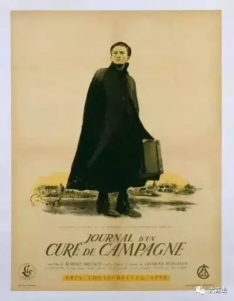
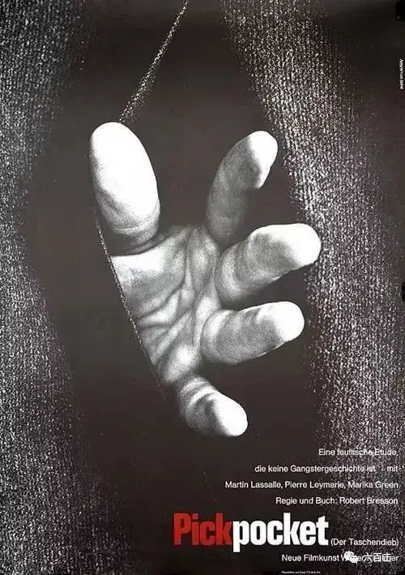
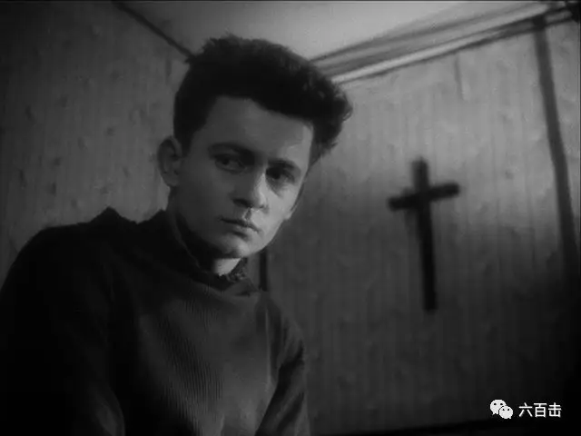
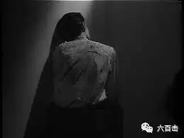
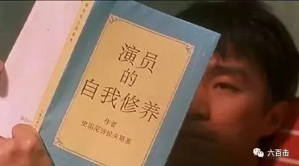
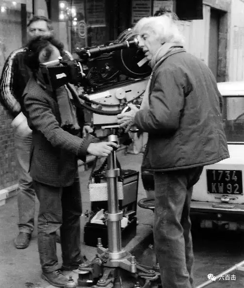
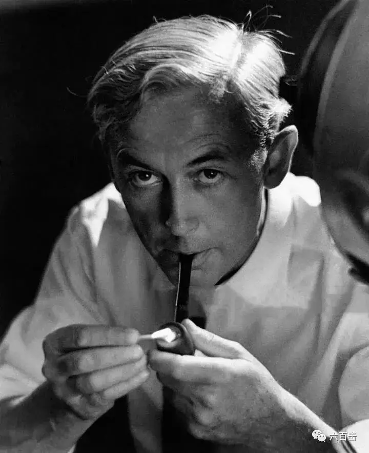

id="js_content" style="">
罗伯特·布列松之于法国电影，正如莫扎特之于奥地利音乐，陀斯妥耶夫斯基之于俄国文学。
——让-吕克·戈达尔

在整个电影史中，很多电影人都在追求突破和创新，他们提倡要怀疑一切，要想方设法去超越过去。
当这种创作心态上的骄傲和激进蔓延到精神世界中，很多人逐渐丧失了对于信仰的追求和信靠，甚至很多人在用艺术去亵渎信仰。
所以在电影史中，那些坚守信仰、并用电影去严肃追问的大师，显得弥足珍贵，电影在他们手中不仅仅是表达手段，更是出路。
其中，最耀眼的除了塔尔科夫斯基和卡尔.德莱叶，就是今天要介绍的罗伯特.布列松。

他是继让·雷诺阿以后，享有最高声誉的法国电影导演，布列松在《电影手册》的法国导演排名榜中位列第一。
他对电影艺术的极致追求使得自己的风格自成一家，既不属于新现实主义流派，也不属于新浪潮。
但却获得两个流派领头人的盛赞，新浪潮先驱把布列松誉为这场电影运动的榜样人物。
布列松在现代电影理论上也影响深远，他提出了著名的“电影书写”理论，因此被看做是与亚历山大·阿斯特鲁克和安德烈·巴赞齐名的现代电影理论奠基者。
他一生获奖无数，是大师中的大师，是电影史上拥有最多大师粉丝的导演。
从戈达尔、路易·马勒，到保罗·施拉德、凯瑟琳·布雷亚、皮亚拉、哈内克、科斯塔、蔡明亮，再到安德列·塔科夫斯基乃至玛格丽特·杜拉斯，每个人都不吝啬对他的溢美之词。
安德列·塔科夫斯基曾这样评价布列松：“如果罗伯特·布列松排在电影导演的第一位，其他导演顶多能排在第九、第十位，一想到这点，我就感到无比地沮丧。”
布列松何以有如此魅力？

布列松的《金钱》与塔可夫斯基的《乡愁》共同荣获戛纳电影节最佳导演奖
两位大师的这张合影让无数影迷热泪盈眶
01 无比深沉的宗教性
布列松出生于法国，天主教和艺术是他童年的两个关键词，长大后，布列松成为了一个画家。
第二次世界大战期间，布列松成为了战俘，时间长达一年，期间接触了电影胶卷，对电影产生了浓厚的兴趣。
1933年，布列松被转入德国集中营，在那里他认识了勃里克柏杰主教，离开集中营时，主教委托他拍摄以一所修女院为背景的《罪恶天使》。
至此，布列松正式进入电影界，并确定了以哲学性、天主教思想为主题的电影风格。
布列松的作品关注精神世界，尤其是超越性的存在。

作品主人公在内心深处总是处于某种痛苦和挣扎之中，《乡村牧师日记》中的年轻牧师因当地人们对信仰的漠视而充满煎熬，《死囚越狱》中的主人公面临即将到来的死刑，内心充满恐惧。

《扒手》中无所事事的米歇尔更是饱受虚无主义的痛苦，《穆谢特》中的少女生活在暗淡无光的家庭环境中。

这些死囚、扒手、罪人、牧师虽然困顿，但往往具有强烈的献身精神，布列松通过他们去寻找和表达救赎的希望，作品带有极强的殉道色彩。

布列松对于上帝以及超越性存在的执着使得他的作品早已跳出美学的范畴，成就他作品的深度。
所以近代西方最引人注目的美国著名作家、评论家苏珊·桑塔格说：“布莱松的影片呈现了‘灵魂的实体’”。
很多人只是痴迷布列松的拍摄理念和视听语言，但如果不能深入到布列松表达主题中，就无法真正走入布列松的世界，也无法真正理解布列松的电影形式，毕竟，布列松曾坦言，他的电影首先要呈现与上帝的关系：
There is the feeling that God is everywhere, and the more I live, the more I see that in nature, in the country. When I see a tree, I see that God exists. I try to catch and to convey the idea that we have a soul and that the soul is in contact with God. That's the first thing I want to get in my films （Robert Bresson）
02 极简主义美学
布列松的电影风格之所以特立独行，是因为他对于电影真实的看法很独到。
布列松对于电影的看法某种程度上和布莱希特对戏剧的看法很像，他们都反对表现和情感共鸣，他们不希望观众沦为导演或者作者的玩物。
反对通过惊心的编排和设计来唤起观众的情感，他们认为这是一种相当被动的体验，缺乏观众主动的思考，他们认为这样是不真实的。

他们希望诉诸于理性来达到真正的艺术效果，正如苏珊·桑塔格认为：
有些艺术直接以唤起情感为目的,有些艺术则通过理智的途径而诉诸情感.....反思的艺术实际上是对观众施加某种节制的艺术———延续其轻易获得的满足感
所以布莱希特提出“间离”来打断观众的情感投入，想法设法让观众置身事外，以一个旁观者或者独立者的身份去思考，他认为这样完全可以代替情感共鸣成为艺术享受的根基:
如果放弃使人迷醉的办法,那么用什么别的办法?观众在新的剧院里如果不能采取梦幻的、被动的、听任命运摆布的态度的话,该用的应是什么态度?观众不该被人再诱骗,相反,他应该被带到现实世界,并怀着清醒的理智… …用引起间离来代替感情上的共鸣。
对于这一点，布列松严格区分了“电影书写”与“电影”的概念内涵,认为只有前者才是真正意义上的艺术创作。
布列松说：电影之影片只能采用演员,电影书写之影片只能采用模特儿。
这句话很抽象，“模特儿”按说是一种造型的艺术，但是布列松却说：“电影书写”并不是一种造型体验,而是一种叙述体验。
也就是说，布列松理想的“电影书写”中的影像和声音是自在自为的,模特儿在行动,在说话,可他没有也不需要演技,他并不是另一个人,仍是他自己。
“模特儿“要成为你的片中人物,就是做他们自己,保持原来的样子。
所以，布列松不讲究精致的布景，反对戏剧化，电影发展没有太大的波折，往往都是很自然的结束，他的作品中也很少用到音乐。
布列松的电影采用大段大段的内心独白和旁白来推进故事的发展，去刻画和挖掘人物的性格和内心活动。
布列松的电影书写理论，影响最鲜明的是他对演员的指导。
他反对表演，他认为这是不真实的，这与在电影表演艺术影响很大的斯坦尼斯拉夫斯基表演体系非常不同。
斯坦尼斯拉夫斯基要求演员进入要求演员进入角色,与角色合而为一，体验角色的感情,并予以传达。

斯坦尼斯拉夫斯基代表作品
而布列松却坚决反对这一点，他的看法非常深刻：
滑动下方区域
查看完整内容
▼
我喜欢他们的表演完全脱离思想的限制，我们一直重复拍摄，哪怕重复50次，直到演员的思想不再影响他的对话或动作。
一旦事情变成自动，演员就完全融入情节之中，会有完全不可预料的事情发生，这比戏剧表演真实上百倍。
戏剧演员必须背台词，想好每个动作每句话，这不可能做到真实。
我们无法模仿人生，我们必须在不去模仿的情况下重现人生，模仿的就不是真实的，那是虚假，我想利用这种机制，能够创造出看起来真实或完全真实的东西。
我所感兴趣的不是他们表现出来的，而是他们所隐藏的东西。
在电影中，原材料不是演员，而是人。我再说说我对表演的看法，表演简单的说就是映射，演员将自己映射到他想象的角色之中，同时，他也在看着自己。
在电影中，大致也是如此。如果演员到处表现自己，那还剩下什么？什么都没有。角色会变得空洞，你可以在特写镜头中观察到这一点，演员缺场了，甚至失去了他自己。
人们之所以有魅力，是因为他们没有意识到自己有魅力，这就是我寻求的真正的魅力，这也是电影所需要的。这也是为什么电影能够深入探讨人类心理，进行心理分析。
我不会给演员看他们之前拍的东西，这样的话他们就不会拿自己和那里面的他们做比较。
所以，布列松到后来几乎不用专业演员，选择启用非职业演员，他不希望他们有表演的概念，在拍摄中，这些演员鲜有表情的流露，布列松通过捕捉他们的动作来表现真实。
布列松在摄影机前总是耐心等待，去捕捉瞬间的自发性和新鲜感，他认为这才是最真实的流露。

这也非常契合他的“模特儿”概念，其核心是保持自然生命存在的神秘性和不可知性，这是布列松所追求的真实。
了解了这些，我们就很容易理解布列松的极简主义视听风格，我们才能真正明白为什么他的电影对白很少，但旁白和独白那么多，为什么鲜有配乐，为什么演员表演不夸张，为什么平平淡淡但却异常真实。
这背后是布列松深刻的观察和思考，并不是别人可以简单复制的技巧。

布列松在创作中确实也严格践行自己的电影理念，用14部伟大的作品表现了超越性存在的真实和盼望。
这位光影圣徒值得我们尊敬和学习，后面我们将深入到布列松的作品中去探求他在电影中的追求和表达，这是一座巨大的精神宝藏。
关注并回复：布列松
获取大师作品全集
相关推荐：
《超脱》| 我的灵魂失语了
官方说法
100双绝望的眼睛
这里没有挑逗你眼目情欲的小鲜肉
也没有挑动你肉体情欲的段子
更没有膨胀你今生骄傲的鸡血
我们只在乎那些最质朴真诚的作品
在那里我们才能恢复真正的想象力
我们也坚信这才是我们真正需要的

ID:Six_hundred_hits
长按二维码，一键关注
【六百击】
-END-
电影评论
尽情分享朋友圈

苹果打赏通道